Shape of dataset is : (45211, 23)
<class 'pandas.core.frame.DataFrame'>
RangeIndex: 45211 entries, 0 to 45210
Data columns (total 23 columns):
# Column Non-Null Count Dtype
--- ------ -------------- -----
0 age 45211 non-null int64
1 job 45211 non-null object
2 marital 45211 non-null object
3 education 45211 non-null object
4 default 45211 non-null object
5 balance 45211 non-null int64
6 housing 45211 non-null object
7 loan 45211 non-null object
8 contact 45211 non-null object
9 day 45211 non-null int64
10 month 45211 non-null object
11 duration 45211 non-null int64
12 campaign 45211 non-null int64
13 pdays 45211 non-null int64
14 previous 45211 non-null int64
15 poutcome 45211 non-null object
16 y 45211 non-null int64
17 month_int 45211 non-null int64
18 cons.conf.idx 45211 non-null float64
19 emp.var.rate 45211 non-null float64
20 euribor3m 45211 non-null float64
21 nr.employed 45211 non-null float64
22 cons.price.idx 45211 non-null float64
dtypes: float64(5), int64(9), object(9)
memory usage: 7.9+ MB
Columns in dataset
NoneAN ANALYSIS OF PORTUGUESE BANK MARKETING DATA
The George Washington University (DATS 6103: An Introduction to Data Mining)
1 INTRODUCTION
Bank marketing is the practice of attracting and acquiring new customers through traditional media and digital media strategies. The use of these media strategies helps determine what kind of customer is attracted to a certain institutions. This also includes different banking institutions purposefully using different strategies to attract the type of customer they want to do business with.
Marketing has evolved from a communication role to a revenue generating role. The consumer has evolved from being a passive recipient of marketing messages to an active participant in the marketing process. Technology has evolved from being a means of communication to a means of data collection and analysis. Data analytics has evolved from being a means of understanding the consumer to a means of understanding the consumer and the institution.
Bank marketing strategy is increasingly focused on digital channels, including social media, video, search and connected TV. As bank and credit union marketers strive to promote brand awareness, they need a new way to assess channel ROI and more accurate data to enable personalized offers. Add to that the growing importance of purpose-driven marketing.
The relentless pace of digitization is disrupting not only the established order in banking, but bank marketing strategies. Marketers at both traditional institutions and digital disruptors are feeling the pressure.
Just as bank marketers begin to master one channel, consumers move to another. Many now toggle between devices on a seemingly infinite number of platforms, making it harder than ever for marketers to pin down the right consumers at the right time in the right place.
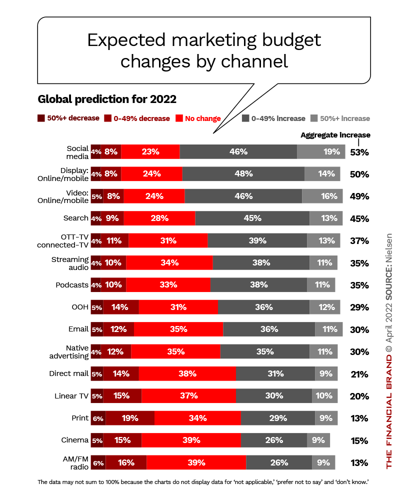
1.1 The Data Set
The data set used in this analysis is from a Portuguese bank. The data set contains 41,188 observations and 21 variables. The variables include the following:
- age (numeric)
- job : type of job (categorical: ‘admin.’,‘blue-collar’,‘entrepreneur’,‘housemaid’,‘management’,‘retired’,‘self-employed’,‘services’,‘student’,‘technician’,‘unemployed’,‘unknown’)
- marital : marital status (categorical: ‘divorced’,‘married’,‘single’,‘unknown’; note: ‘divorced’ means divorced or widowed)
- education (categorical: ‘basic.4y’,‘basic.6y’,‘basic.9y’,‘high.school’,‘illiterate’,‘professional.course’,‘university.degree’,‘unknown’)
- default: has credit in default? (categorical: ‘no’,‘yes’,‘unknown’)
- housing: has housing loan? (categorical: ‘no’,‘yes’,‘unknown’)
- loan: has personal loan? (categorical: ‘no’,‘yes’,‘unknown’)
- contact: contact communication type (categorical: ‘cellular’,‘telephone’)
- month: last contact month of year (categorical: ‘jan’, ‘feb’, ‘mar’, …, ‘nov’, ‘dec’)
- day_of_week: last contact day of the week (categorical: ‘mon’,‘tue’,‘wed’,‘thu’,‘fri’)
- duration: last contact duration, in seconds (numeric). Important note: this attribute highly affects the output target (e.g., if duration=0 then y=‘no’). Yet, the duration is not known before a call is performed. Also, after the end of the call y is obviously known. Thus, this input should only be included for benchmark purposes and should be discarded if the intention is to have a realistic predictive model.
- campaign: number of contacts performed during this campaign and for this client (numeric, includes last contact)
- pdays: number of days that passed by after the client was last contacted from a previous campaign (numeric; 999 means client was not previously contacted)
- previous: number of contacts performed before this campaign and for this client (numeric)
- poutcome: outcome of the previous marketing campaign (categorical: ‘failure’,‘nonexistent’,‘success’)
- emp.var.rate: employment variation rate - quarterly indicator (numeric)
- cons.price.idx: consumer price index - monthly indicator (numeric)
- cons.conf.idx: consumer confidence index - monthly indicator (numeric)
- euribor3m: euribor 3 month rate - daily indicator (numeric)
- nr.employed: number of employees - quarterly indicator (numeric)
- balance - average yearly balance, in euros (numeric)
- y - has the client subscribed a term deposit? (binary: ‘yes’,‘no’)
1.2 The SMART Questions
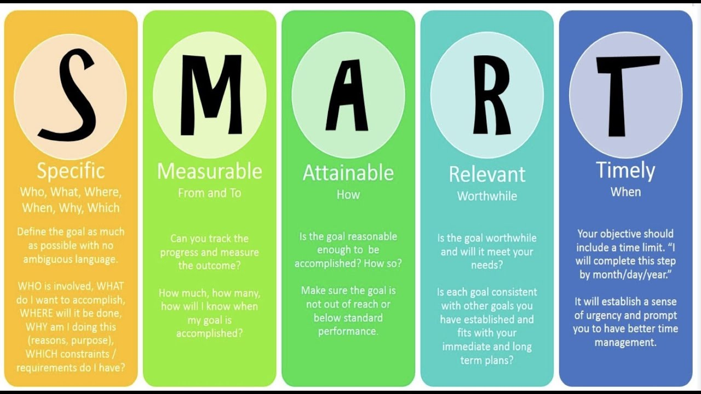 The SMART questions are as follows:
1.Relationship between subscribing the term deposit and how much the customer is contacted (last contact, Campaign, Pdays, Previous Number of contacts)
- Find out the financially stable population? Will that affect the outcome?
3.Effect of dimensionality reduction on accuracy of the model.
- How are the likelihood of subscriptions affected by social and economic factors?
Throughout the paper we would try to answer the questions
Importing the required libraries
1.3 Importing the dataset
1.4 Basic Information about the data
2 Exploratory Data Analysis (EDA)
2.1 Distribution of y(target) variable

We have 45,211 datapoints, if our model predicts only 0 as output, we would still get 88% accuracy, so our dataset is unbalanced which may gives misleading results. Along with the accuracy, we will also consider precision and recall for evaluation.
2.2 Missing values and Outliers
2.2.1 Education
Here, even though we do not have any missing values but we have ‘unknown’ and ‘other’ as categories, so we will first get rid of them. The variables with ‘unknown’ rows are Education and Contact showned below.
Text(0.5, 1.0, 'Type of education Distribution')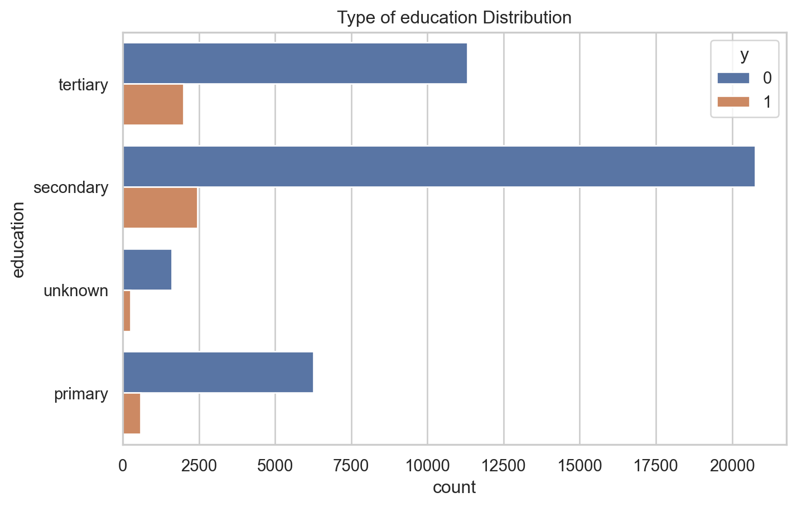
2.2.2 Contact
Text(0.5, 1.0, 'Type of Contact Distribution')
- since the type of communication(cellular and telephone) is not really a good indicator of subcription, we drop this variable.
2.2.3 Poutcome
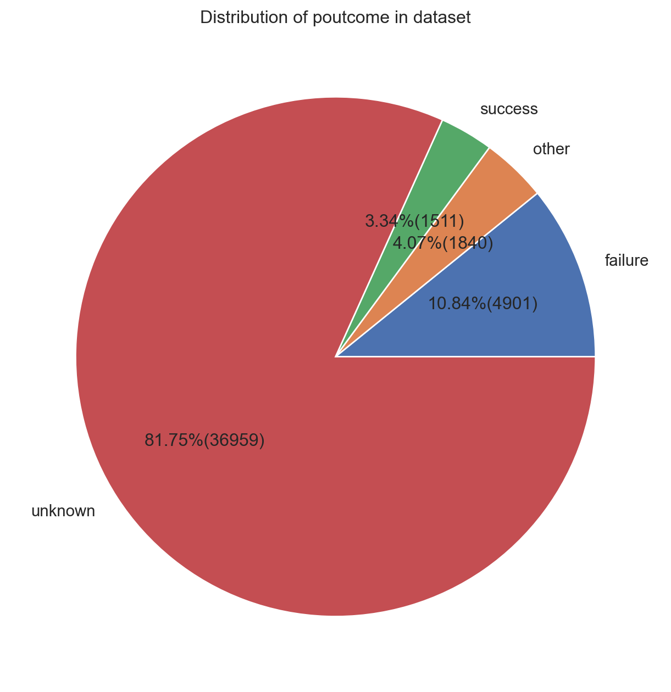
poutcome
failure 4901
other 1840
success 1511
unknown 36959
dtype: int64There are 36959 unknown values(82%) and 1840 values with other(4.07% ) category, we will directly drop these columns.
2.3 Outliers

- There are outliers in duration and balance so we need to get rid of them.
3 Data Cleaning
- Contact is not useful so we drop it.
- In poutcome, we have a lot of ‘unknown’ and ‘other’ values so we drop it.
- Day is not giving any relevant infomation so we drop it.
- Removing the unknowns from ‘job’ and ‘education’ columns.
- Remove the outliers from balance and duration.
3.1 Dropping the irrelavant columns and missing values
for job
unknown : 288
dropping rows with value as unknown in job
for education
unknown : 1730
dropping rows with value as unknown in education3.2 Outlier removal
We have outliers in balance and duration, so to get rid of them we would try to remove the enteries few standard deviation away, since from the histograms most of the enteries are around mean only, we are removing the enteries more than 3SD away.
3.2.1 Balance - Outliers
removing entries before balance -7772.283533
dtype: float64 and after balance 10480.338218
dtype: float643.2.2 Duration - Outliers
Dropping rows where the duration of calls is less than 5sec since that is irrelevant. And also since converting the call duration in minutes rather than seconds makes more sense we would convert it into minutes.
plotting violen plot for duration and balance after cleaning data
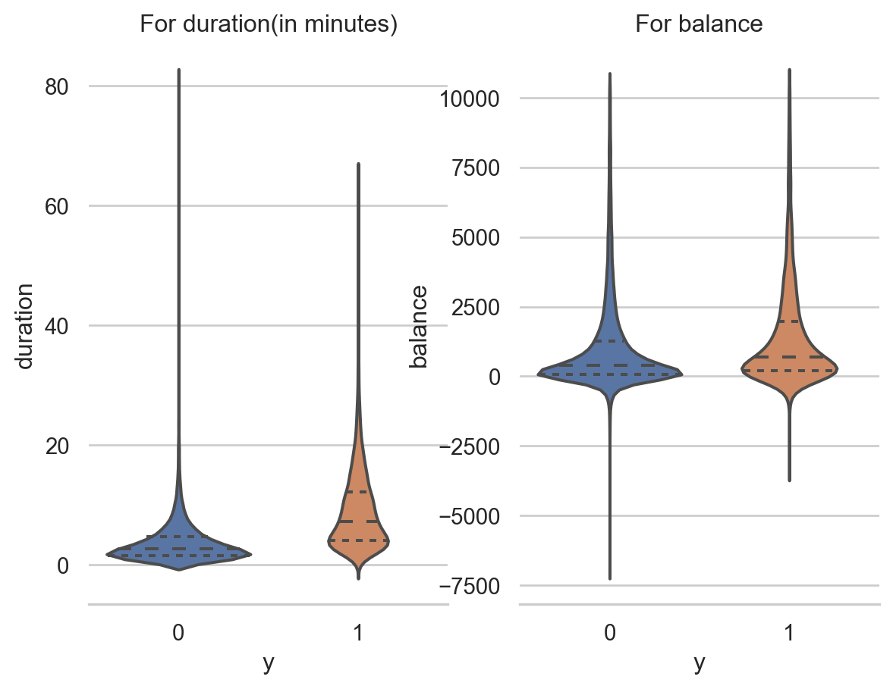
4 Data Visualization
Let’ visualize important relationships between variables now.
4.1 SMART Question 1 :
Relationship between subscribing the term deposit and how much the customer is contacted (last contact, Campaign, Pdays, Previous Number of contacts)
Answer : Based on last contact info only number of contacts performed during this campaign is contributing a lot towards subscription rates.
Suggestion: People who are contacted less than 5 times should be targeted more. Also, they could contact in less frequency in order to attract more target customers. The plot below shows the relationship between the number of calls and duration vs subscription
4.1.1 Number of calls versus Duration and affect on subscription
Here if we notice, people are more likely to subscribe if the number of calls are less than 5.
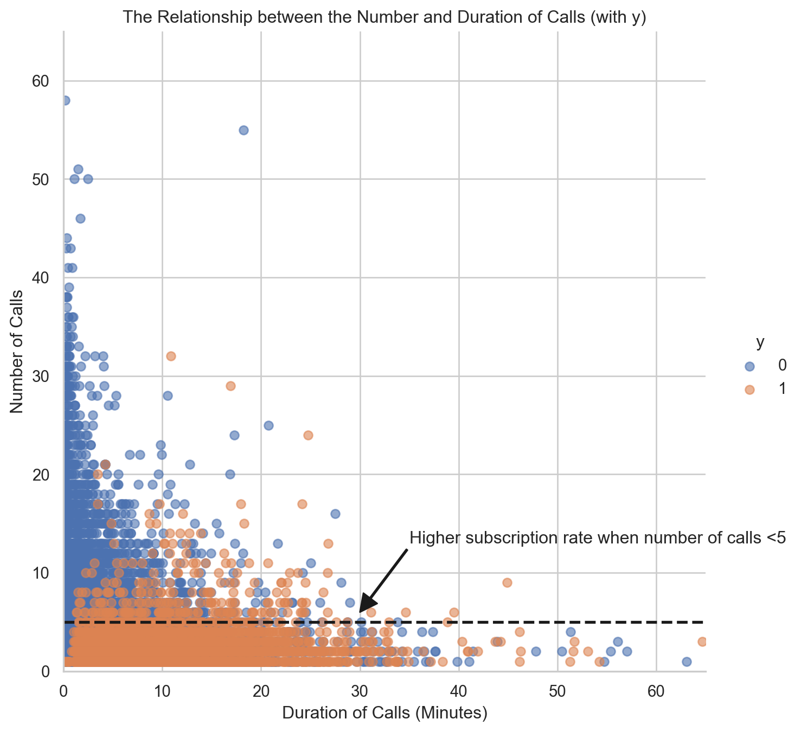
Checking between pdays and previous as well
Here as we can see from the t- test, t
- pdays: number of days that passed by after the client was last contacted from a previous campaign (numeric; 999 means client was not previously contacted)
- previous: number of contacts performed before this campaign and for this client (numeric)
We can notice from the plot that there is no relationship between subscription with pdays or previous. The datapoints are distrubuted randomly along the axies.

4.2 Month wise subscription
Text(0.5, 0, 'Month')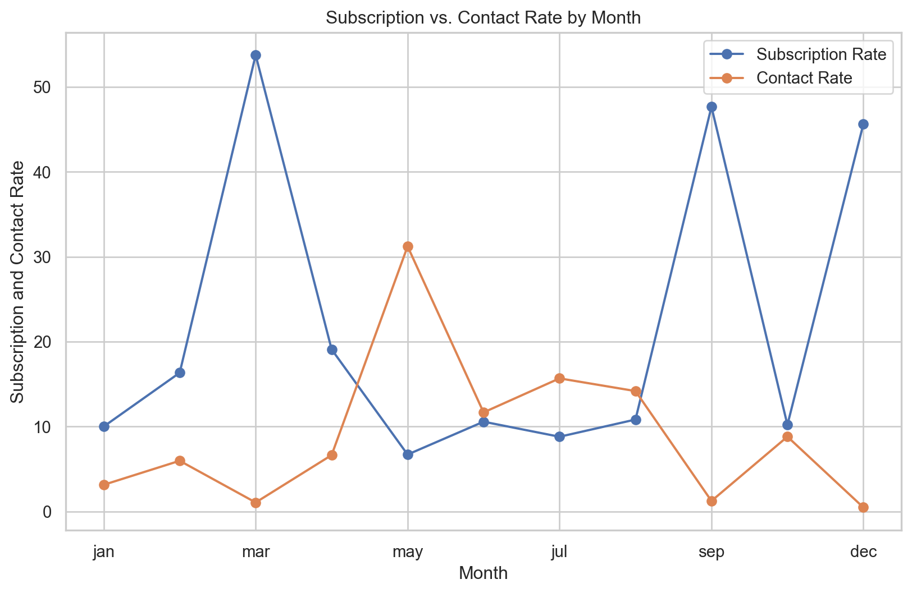
Maximum percentage of people have subscribed in the month of March but bank is contacting people more in the month of May.
Suggestion:So it’s better to contact customer’s based on the subcription rate plot.
4.2.2 SMART Question 2
Find out the financially stable population? Will that affect the outcome?
We will try to find the financially stable population based on age, jobs, loan and balance.
4.2.3 Loan
Text(0.5, 1.0, 'Type of loan Distribution')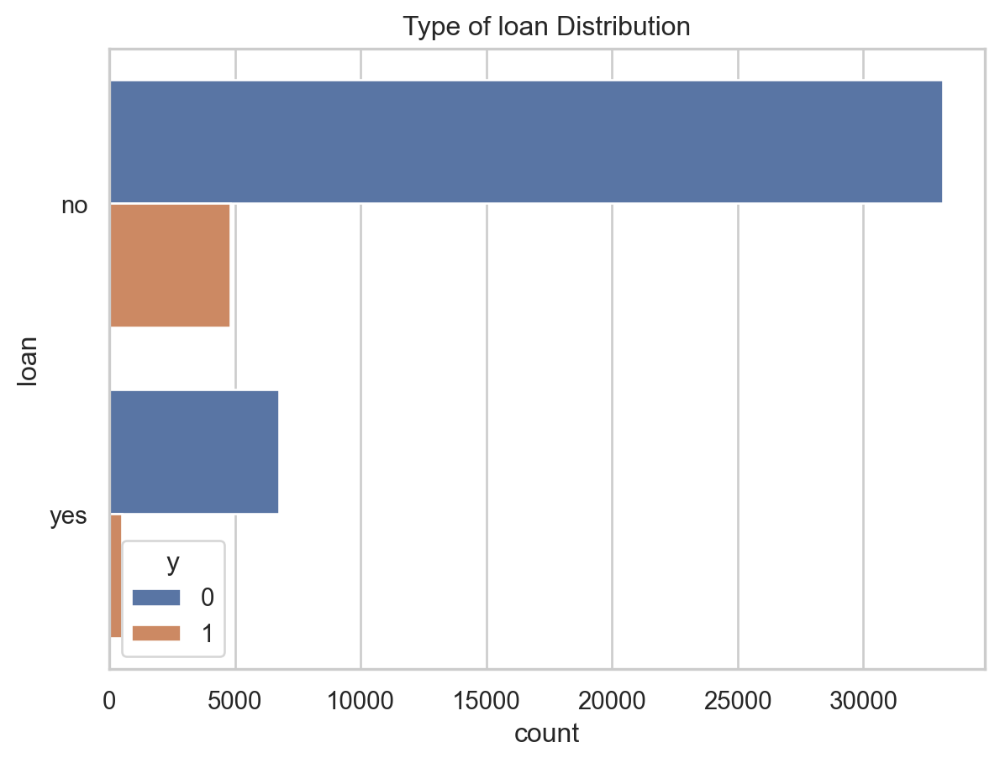
Text(0.5, 1.0, 'Type of housing Distribution')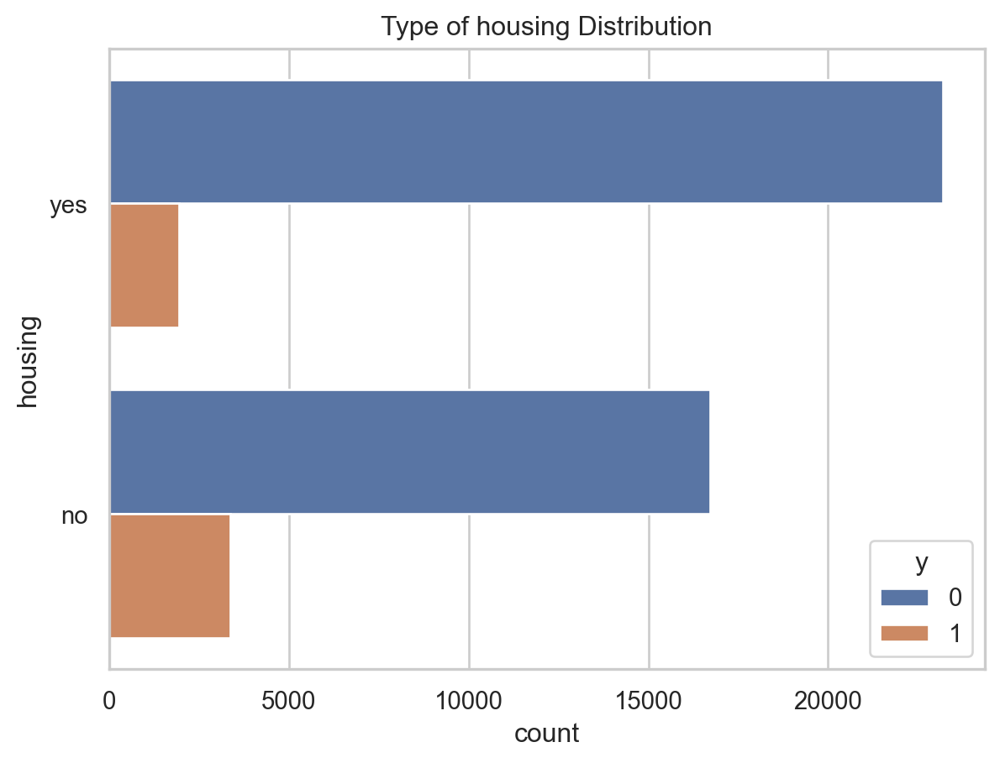
People with housing loans are less likely to subscribe to term deposit but the difference here is not huge.
Text(0.5, 1.0, 'Type of default Distribution')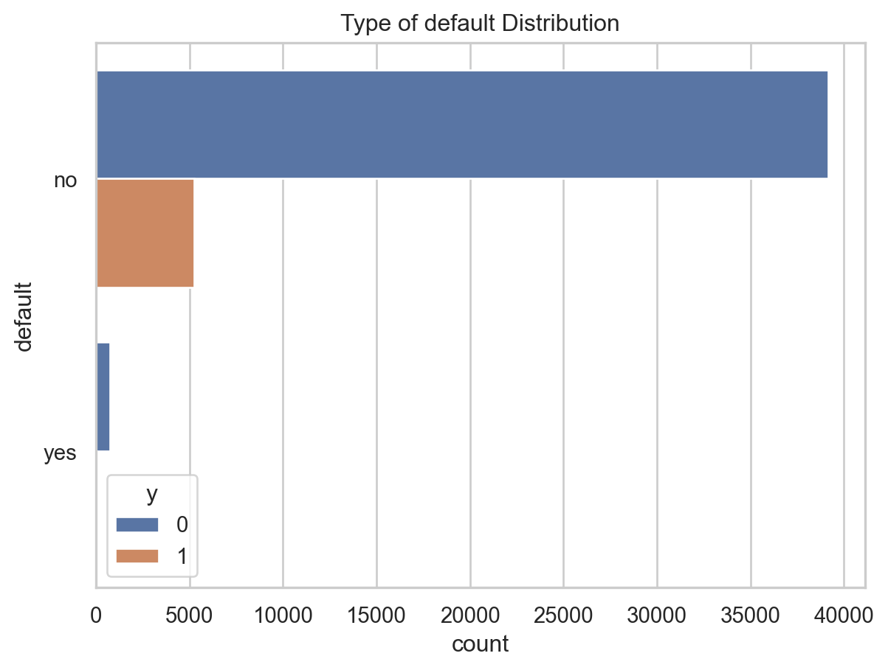
So people who have not paid back there loans and have credits, have not subcribed to the term deposit.
- people who have loans are subscribing to term deposit less.
4.2.4 Age
Elder people might be more financially stable since they are subscriped to the term deposit more.
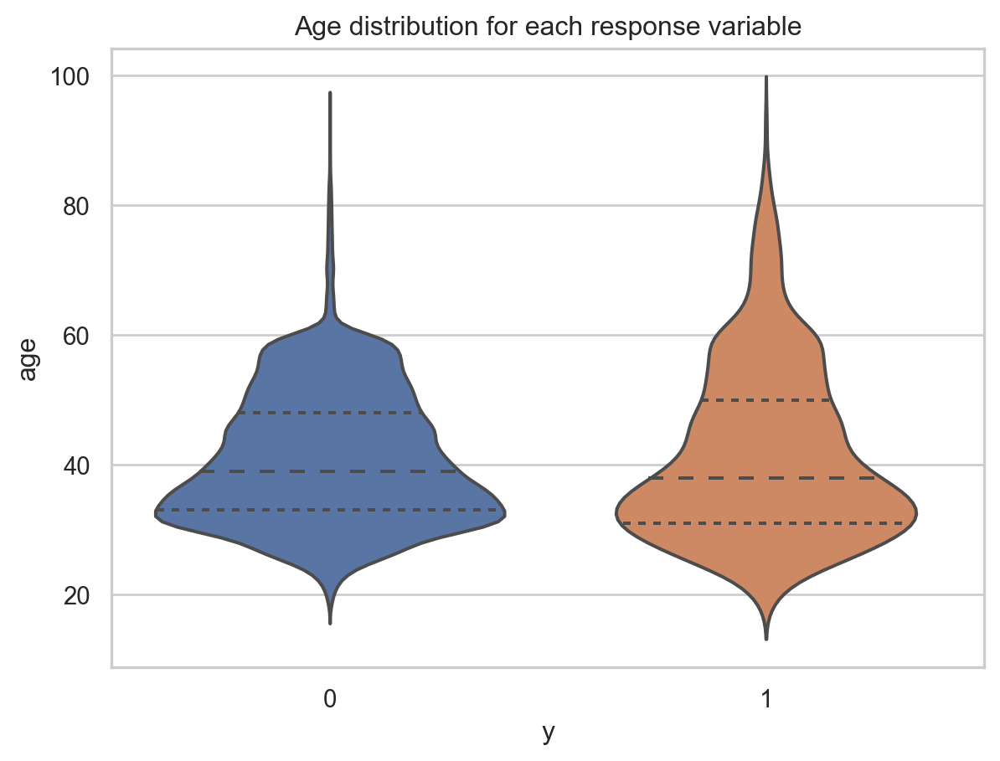
- People who are old are more likely to subscribe to term deposit.
4.2.5 Job
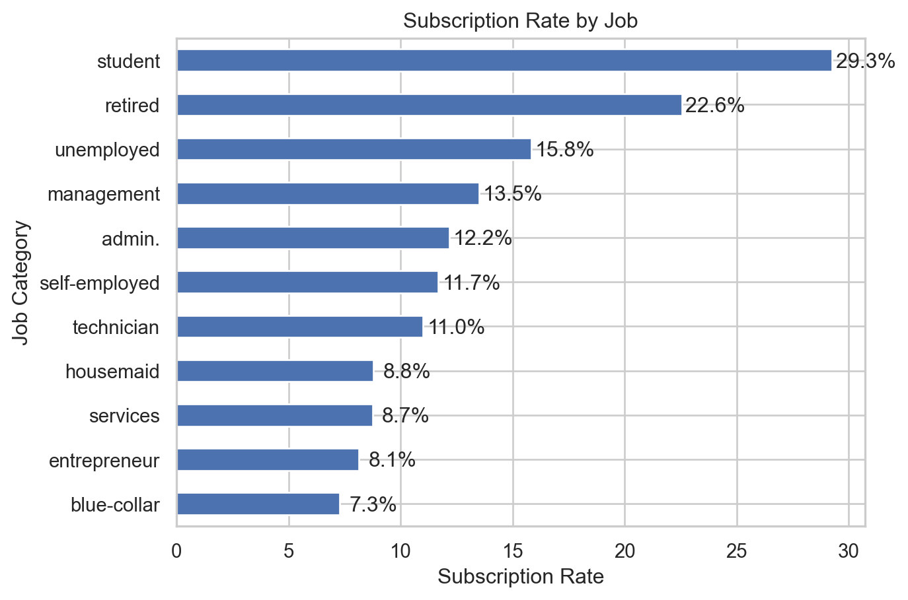
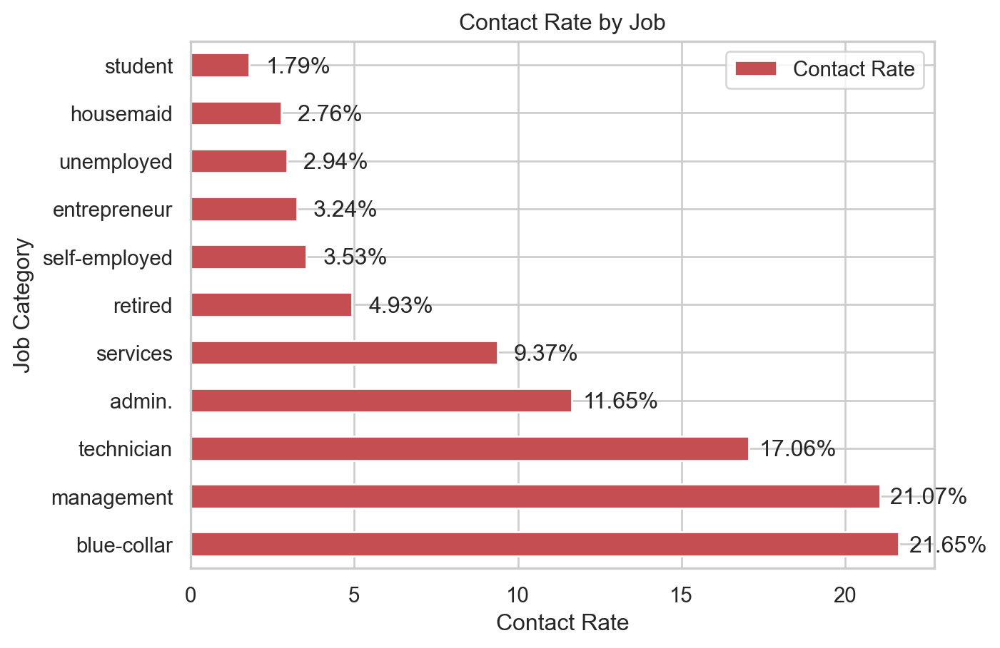
People in blue collar and management jobs are contacted more, which should not be the case. Since they have less subscription rates. Unlike popular assumption, students, retired and unemployment seem to have a high subscription rates. Even though they are contacted very less.
suggestion: The high subscripted rate group(students, retired and unemployment) should be contacted more.
4.2.6 Balance
Checking the subscriptions in each balance groups
balGroup % Contacted % Subscription
0 low balance 60.339143 10.503513
1 moderate balance 17.399906 14.036275
2 high balance 13.709374 16.715341
3 Negative 8.551578 5.700909
balanceGroup Contact Rate Subscription Rate
0 Negative 8.551578 5.700909
1 low balance 60.339143 10.503513
2 moderate balance 17.399906 14.036275
3 high balance 13.709374 16.715341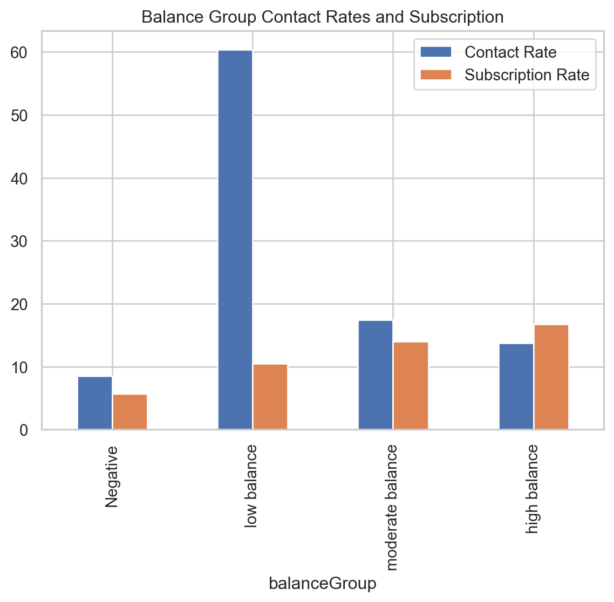
suggestion:People with moderate to high balance, are contacted less but they have high subscription rates so bank should target them more.
It might be possible that balance group and jobs are telling the same information since some jobs might have high salary and thus balance groups might be depicting jobs only, so we will try to look at them together.
Balance Group versus Job
Text(0.5, 1.0, 'Contact for each balance group in job category')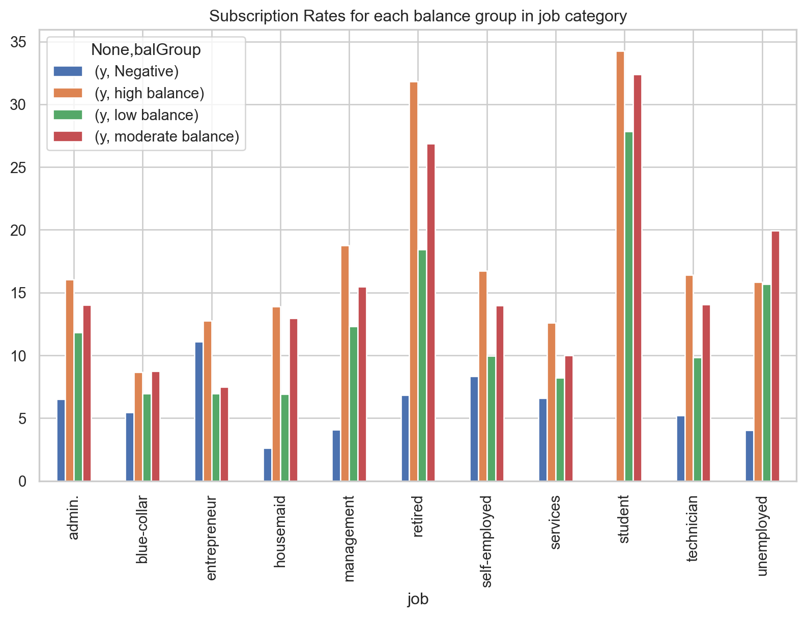

Student and Retired are more likely to subscribe and usually have moderate to high balance.
We found from the second bar chart that only the low balance groups are targeted in each category even though moderate to high balance category are more likely to subscribe.
5 Data Encoding
5.1 One Hot Encoding
We would encode ‘housing’,‘loan’,‘default’,‘job’,‘education’ and ‘marital’ as they are all categorical variables.
5.2 Sin - Cos encoding
Transforming month into sin and cos so that there cyclic nature (jan-dec are as close as jan-feb) is retained which is usually lost in label encoding. Unlike one hot encoding, the dimension will reduce from 12(month_jan, month_feb … month_dec) to 2(sin_month , cos_month)
<AxesSubplot: xlabel='sin_month', ylabel='cos_month'>
5.3 Dropping unnecessary columns irrelevant for modelling
Here we dropped the ‘month’ column as they are encoded. Also, we dropped irrelvant variables ‘pdays’ and enconomic factors(‘cons.conf.idx’, ‘emp.var.rate’, ‘euribor3m’, ‘nr.employed’,‘cons.price.idx’) for modelling.
6 Data Modeling
6.1 Splitting our Dataset
We are splitting our dataset in 1:4 ratio for training and testing set.
6.2 Balancing Our Dataset
We tried to balance our dataset using following methods:
- Upsampling using SMOTE
- Sin and cos transformation from month_int.
7 Scaling numeric variables
Scaling age, balance, duration so that our algorithms perform better and all variables are treated equally. Since all three variables are in different scales, so we transform them into same standard.
8 Logistic Regression
Performing Logistic Regression on both balanced and unbalanced dataset. RFE is used in selecting the most important features ## Unbalanced Dataset
Columns selected by RE ['duration', 'euribor3m', 'cons.price.idx', 'job_blue-collar', 'job_retired', 'job_student', 'education_primary', 'education_tertiary', 'marital_single', 'housing_no', 'housing_yes', 'loan_no', 'loan_yes', 'poutcome_failure', 'poutcome_success', 'month_apr', 'month_aug', 'month_feb', 'month_jan', 'month_jul', 'month_jun', 'month_mar', 'month_nov', 'month_oct', 'age', 'balance']As we can see from RFE, the most relevant features are :
- Duration
- Housing
- Loan
- Job
- Education
- cos_month
From other features selection techniques and EDA, we can see that ‘age’ and ‘balance’ also contrubuted to the subscrption, so we added up these variables as well.
Applying model with selected features
Accuracy for training set 0.8717311715481172
Accuracy for testing set 0.8713389121338913
Confusion matrix
[[4759 148]
[ 590 239]]
precision recall f1-score support
0 0.89 0.97 0.93 4907
1 0.62 0.29 0.39 829
accuracy 0.87 5736
macro avg 0.75 0.63 0.66 5736
weighted avg 0.85 0.87 0.85 5736
Here, the accuracy is 89% but the precision(0.59) and recall rate value(0.20) is low. And we also check on the balanced dataset since the low recall rate might be caused because of the less number of y = 1 value.
9 Balanced Dataset
Columns selected by RE ['duration', 'cons.price.idx', 'job_admin.', 'job_blue-collar', 'job_management', 'job_self-employed', 'job_services', 'job_technician', 'job_unemployed', 'education_primary', 'education_secondary', 'education_tertiary', 'marital_divorced', 'marital_married', 'marital_single', 'housing_no', 'housing_yes', 'loan_yes', 'poutcome_failure', 'month_apr', 'month_aug', 'month_jul', 'month_may', 'month_nov']Accuracy for training set 0.9064744536702155
Accuracy for testing set 0.8516387726638772
Confusion matrix
[[4440 467]
[ 384 445]]
precision recall f1-score support
0 0.92 0.90 0.91 4907
1 0.49 0.54 0.51 829
accuracy 0.85 5736
macro avg 0.70 0.72 0.71 5736
weighted avg 0.86 0.85 0.85 5736
Here, important features are * Housing * Loan * Job * Education * Marital Status
We also added the important features from unbalaced dataset * Duration * Age * Month * Balance
Here even though the precision and recall have improved, and accuracy has dropped down, but the important relationships are lost since the training data now is artificially generated datapoints. We will try to find the optimal cut-off value for original dataset and compare it with the model for balanced data.
9.0.1 Deciding cut off value for logistic regression - Unbalance
But to have good values for cut-off we would try to find a cutoff where the precision and recall values are decent
Based on plot we would choose 0.25 as cut off
Accuracy for testing set 0.8589609483960948
Confusion matrix
[[4447 460]
[ 349 480]]
precision recall f1-score support
0 0.93 0.91 0.92 4907
1 0.51 0.58 0.54 829
accuracy 0.86 5736
macro avg 0.72 0.74 0.73 5736
weighted avg 0.87 0.86 0.86 5736
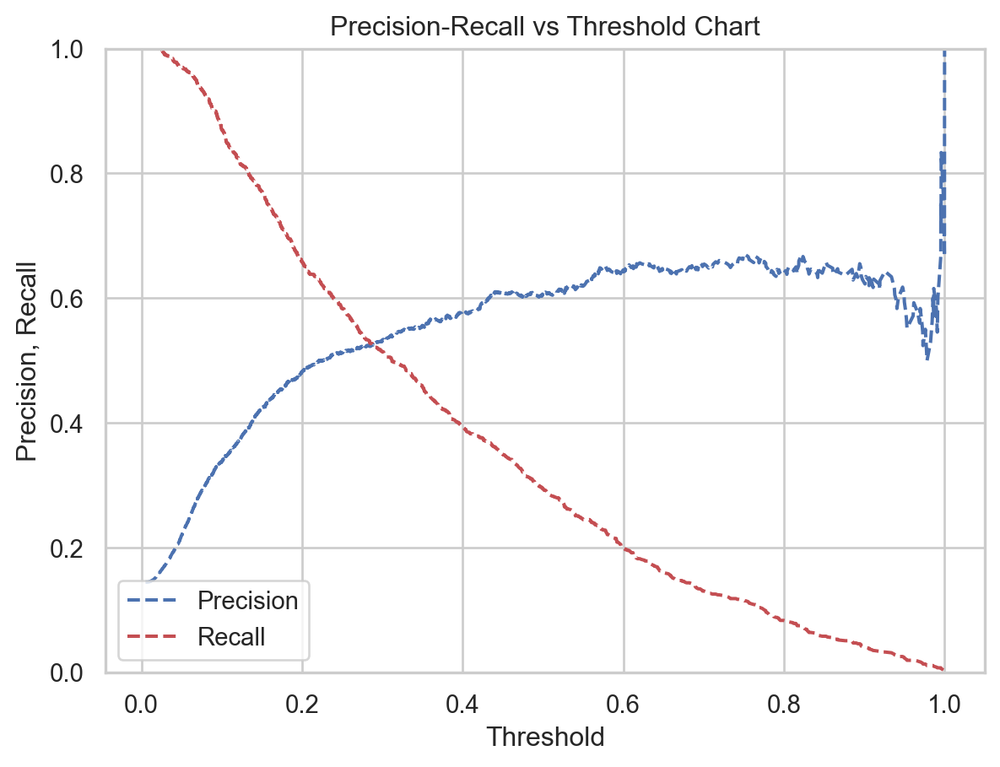
Here as after applying feature selection, finding optimized cut-off, we are able to achieve higher accuracy with optimal precision and recall. Resulting from the comparison, we would continue our modellings with unbalance dataset.
9.0.2 Smart Question 5: The optimal cut off value for classification of our imbalance dataset.
Answer: The optimal cut off value for our imbalance dataset is 0.25 as the precision- recall chart indicated.
9.0.3 SMART Question 2: Since the dataset is imbalanced, will down sampling/up sampling or other techniques improve upon the accuracy of models.
Answer: As observed from above there is a slight improvement in accuracy, precision and recall after we apply SMOTE, but that improvement can also be acheived by adjusting the cut off value as well. So, we should always try adjusting cut-off first, before upsampling.
For ROC - AUC curve refer (Figure 1).
For precision recall curve refer(Figure 2).
10 Decision Tree
10.1 Feature Selection
Feature 0 variable age score 0.08
Feature 1 variable balance score 0.10
Feature 2 variable day score 0.09
Feature 3 variable duration score 0.28
Feature 4 variable campaign score 0.03
Feature 5 variable pdays score 0.07
Feature 6 variable previous score 0.01
Feature 7 variable cons.conf.idx score 0.01
Feature 8 variable emp.var.rate score 0.03
Feature 9 variable euribor3m score 0.02
Feature 11 variable cons.price.idx score 0.03
Feature 29 variable housing_no score 0.03
Feature 30 variable housing_yes score 0.01
Feature 35 variable poutcome_failure score 0.05
Important features from decision treee are :
['age', 'balance', 'day', 'duration', 'campaign', 'pdays', 'previous', 'cons.conf.idx', 'emp.var.rate', 'euribor3m', 'cons.price.idx', 'housing_no', 'housing_yes', 'poutcome_failure']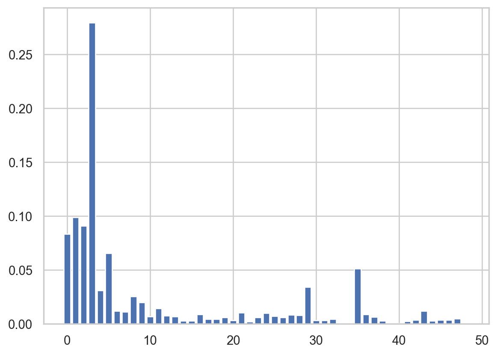
Features selected from this algorithm are
- Age
- Balance
- Duration
- Campaign
- Previous
- Housing
- Job
- Education
- Marital
- Month - Sin,cos
We have all the important features from EDA here
10.2 Hyperparameter tuning
For tuning the hyperparameter’s we will use GridSearch CV.
Fitting 5 folds for each of 168 candidates, totalling 840 fitsBest parameters from Grid Search CV :
{'criterion': 'gini', 'max_depth': 6, 'max_features': None, 'splitter': 'best'}Training model based on the parameters we got from Grid SearchCV.
0.8844142259414226
[[4674 233]
[ 430 399]]
precision recall f1-score support
0 0.92 0.95 0.93 4907
1 0.63 0.48 0.55 829
accuracy 0.88 5736
macro avg 0.77 0.72 0.74 5736
weighted avg 0.87 0.88 0.88 5736
From the decision tree we have better precision, recall, accuracy and thus better f1 score. Hence, decision tree is performing better than logistic regression.
11 Random Forest
11.1 Feature Selection
Important features from random forest :
['age', 'balance', 'day', 'duration', 'campaign', 'pdays', 'previous', 'cons.conf.idx', 'emp.var.rate', 'euribor3m', 'nr.employed', 'cons.price.idx', 'job_management', 'job_technician', 'education_secondary', 'education_tertiary', 'marital_married', 'marital_single', 'housing_no', 'housing_yes', 'poutcome_failure', 'poutcome_success']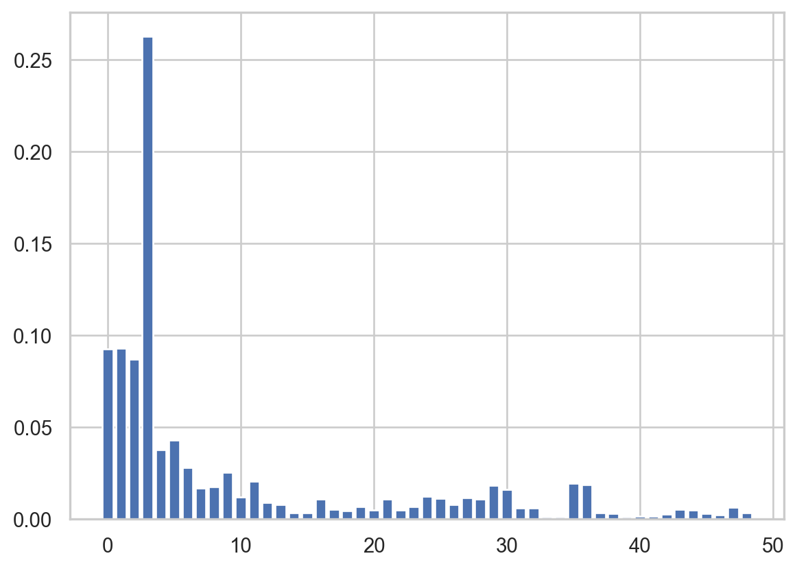
11.2 Hyperparameter Tuning
Fitting 3 folds for each of 32 candidates, totalling 96 fits{'bootstrap': True, 'max_depth': 100, 'max_features': 3, 'n_estimators': 1000}Training accuracy 1.0
Testing set accuracy 0.8868549511854951
[[4714 193]
[ 456 373]]
precision recall f1-score support
0 0.91 0.96 0.94 4907
1 0.66 0.45 0.53 829
accuracy 0.89 5736
macro avg 0.79 0.71 0.74 5736
weighted avg 0.88 0.89 0.88 5736
We are getting best performance from Random Forest but we are not sure why we are getting such idealistic results so we would also apply cross validation to test our results
{'Training Accuracy scores': array([1., 1., 1., 1., 1.]),
'Mean Training Accuracy': 100.0,
'Training Precision scores': array([1., 1., 1., 1., 1.]),
'Mean Training Precision': 1.0,
'Training Recall scores': array([1., 1., 1., 1., 1.]),
'Mean Training Recall': 1.0,
'Training F1 scores': array([1., 1., 1., 1., 1.]),
'Mean Training F1 Score': 1.0,
'Validation Accuracy scores': array([0.88472434, 0.88080192, 0.89322292, 0.88494225, 0.89232781]),
'Mean Validation Accuracy': 88.72038495450722,
'Validation Precision scores': array([0.64488017, 0.64427861, 0.6935123 , 0.64835165, 0.68103448]),
'Mean Validation Precision': 0.6624114433235884,
'Validation Recall scores': array([0.44712991, 0.39064857, 0.46757164, 0.44494721, 0.47734139]),
'Mean Validation Recall': 0.44552774398162703,
'Validation F1 scores': array([0.52809991, 0.48638498, 0.55855856, 0.52772809, 0.56127886]),
'Mean Validation F1 Score': 0.5324100789957235}After applying cross validation, we are getting some what real estimates.
12 Linear SVC
Finding a linear hyperplane that tries to separate two classes.
0.8559972105997211
[[4898 9]
[ 817 12]]
precision recall f1-score support
0 0.86 1.00 0.92 4907
1 0.57 0.01 0.03 829
accuracy 0.86 5736
macro avg 0.71 0.51 0.48 5736
weighted avg 0.82 0.86 0.79 5736
13 SVC
Finding a complex hyperplane that tries to separate the classes.
0.8554741980474198
[[4907 0]
[ 829 0]]
precision recall f1-score support
0 0.86 1.00 0.92 4907
1 0.00 0.00 0.00 829
accuracy 0.86 5736
macro avg 0.43 0.50 0.46 5736
weighted avg 0.73 0.86 0.79 5736
14 Naive Bayes
Naive Bayes a naive assumption that all the features are independent of each other and thus by reducing the complexity of computing conditional probabilities it evaluates the probability of 0 and 1.
Fitting 10 folds for each of 100 candidates, totalling 1000 fitsGaussianNB(var_smoothing=0.0657933224657568)
Model score is 0.8561715481171548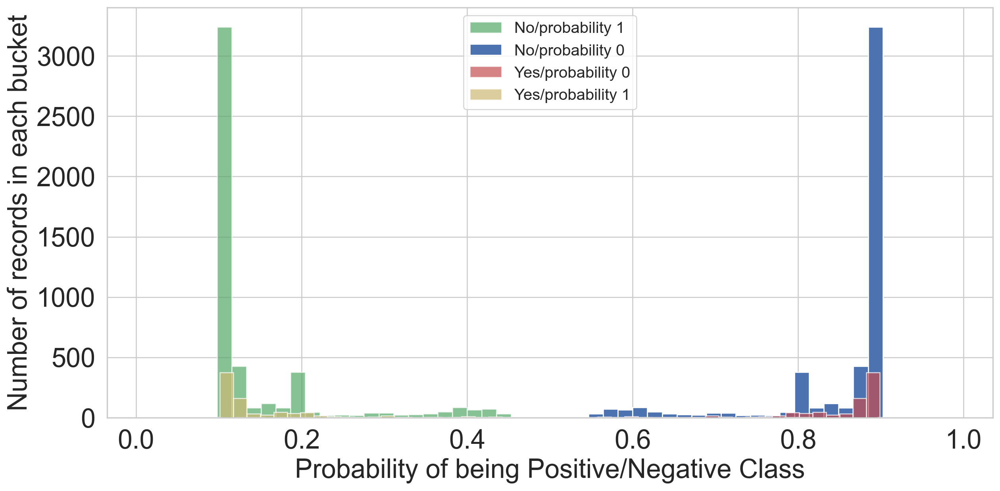
test set evaluation:
0.8561715481171548
[[4892 15]
[ 810 19]]
precision recall f1-score support
0 0.86 1.00 0.92 4907
1 0.56 0.02 0.04 829
accuracy 0.86 5736
macro avg 0.71 0.51 0.48 5736
weighted avg 0.81 0.86 0.80 5736
As we can see from the graph for Yes(1/have subscribed) the probabilities are coming both sides( for 0 as well as for 1) which is not correct.
15 KNN
We will look into precision and accuracy curve for the optimal value of k.
Maximum accuracy:- 0.8769177126917713 at K = 19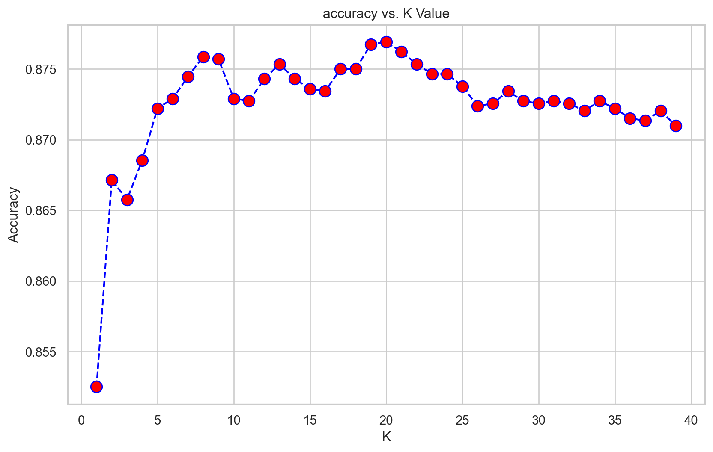
Maximum Precision:- 0.32247407633937064 at K = 8
Based on the above plot, optimal k value is 3, with maximum f1 score of 0.64.
Train set accuracy 0.9197611576011158
Test set accuracy 0.8657601115760112
[[4626 281]
[ 489 340]]
precision recall f1-score support
0 0.90 0.94 0.92 4907
1 0.55 0.41 0.47 829
accuracy 0.87 5736
macro avg 0.73 0.68 0.70 5736
weighted avg 0.85 0.87 0.86 5736
16 ROC -AUC Curve
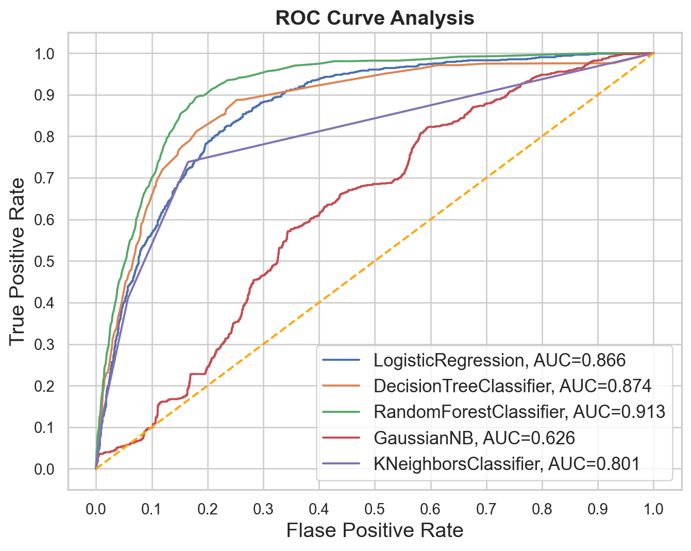
17 Precision Recall Curve
In imbalance problem since we have a high number of Negatives, this makes the False Posiitve Rate as low, resulting in the shift of ROC AUC Curve towards left, which is slightly misleading.
So in imbalance problem we usually make sure to look at precision recall curve as well.
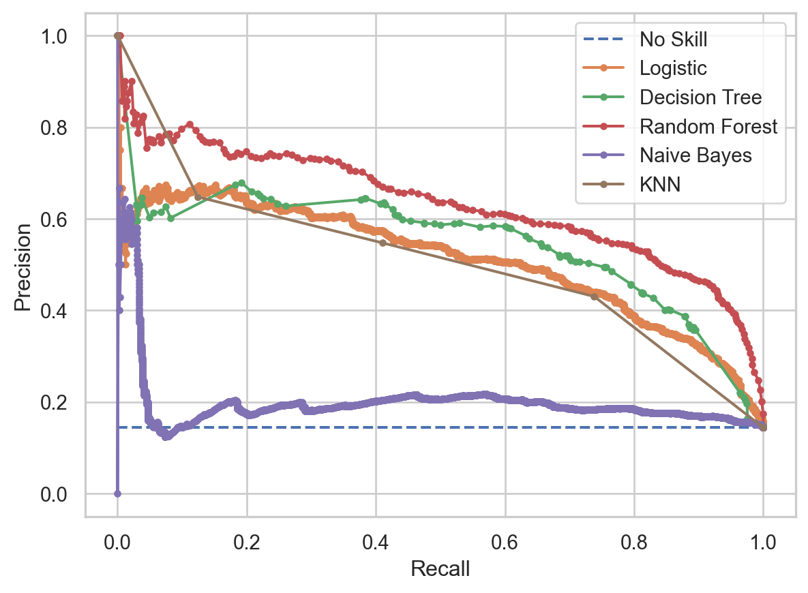
As per the ROC Curve and Precision Recall curve, KNN is performing best. But after combining these results with precision recall curve, we suggest using Random Forest for our problem.
18 Summary
| Model | Accuracy | Precision | Recall | AUC |
|---|---|---|---|---|
| Logistic(Cutoff=0.25) | 0.88 | 0.51 | 0.58 | 0.872 |
| Logistic (Balanced-Train) | 0.85 | 0.49 | 0.54 | |
| Decision Tree | 0.91 | 0.66 | 0.47 | 0.923 |
| Random Forest | 0.88 | 0.66 | 0.46 | 0.913 |
| SVC | 0.89 | 0.75 | 0.15 | |
| Linear SVC | 0.89 | 0.62 | 0.16 | |
| Gaussian Bayes | 0.88 | 0.50 | 0.25 | 0.841 |
| KNN | 0.92 | 0.78 | 0.54 | 0.965 |
See Table 1.
19 Conclusion
Our model would be beneficial in the following ways :
For target marketing for bank campaigns, or in other events. For example based on the customer’s job, age and loan history the model would can easily predict whether the customer is going to subscribe to the term deposit or not. So out of the million people, we can easily shortlist people based on our model and spend the time on them so as to improve efficiency.
Improving buissness effficiency of banks. Since using the eda or model we can easily check the subscription insights, it would be very helpful for banks to improve their stratergies. For example, based on the monthly subscription rates, if banks are deciding the campaign promotion time, it can improve there efficiency.
Since, we have month as a input factor in our model, and all other values are static, we can even find the best month to contact customer based on the predicted probability of the customer. As there can be a relation between the job type and the month they are subscribing or their fluctuating balance and age. This can be very useful in finding the best time to contact.
Based on the model, since the number of contact is playing a major role, if we have the optimal time to contact them, we can restrict our calls to less than 5 and find a better turnover.
We didn’t see any relation with the social and economic factors here, but if we had the data for multiple years, there was a possibility of finding a relation. Our model can accomodate these factors as well, and if trained by accomodating these factors as well, this can be helpful for banks in finding the proper time for there campaign.
Hence, analyzing this kind of marketing dataset has given us valuable insight into how we can tweak our model to give buisness insights as well as customer insights to improve subscription of term deposits.
20 Reference
https://www.kaggle.com/janiobachmann/bank-marketing-dataset
(PDF) Data Analysis of a Portuguese marketing campaign using bank … (no date). Available at: https://www.researchgate.net/publication/339988208_Data_Analysis_of_a_Portuguese_Marketing_Campaign_using_Bank_Marketing_data_Set (Accessed: December 20, 2022).
Bank marketing data set. (n.d.). 1010data.com. Retrieved December 20, 2022, from https://docs.1010data.com/Tutorials/MachineLearningExamples/BankMarketingDataSet_2.html
Manda, H., Srinivasan, S., & Rangarao, D. (2021). IBM Cloud Pak for Data: An enterprise platform to operationalize data, analytics, and AI. Packt Publishing.
Solving Bank Marketing Calssification Problem - Databricks. (n.d.). Databricks.com. Retrieved December 20, 2022, from https://databricks-prod-cloudfront.cloud.databricks.com/public/4027ec902e239c93eaaa8714f173bcfc/8143187682226564/2297613386094950/3186001515933643/latest.html
Solving Bank Marketing Calssification Problem - Databricks. (n.d.). Databricks.com. Retrieved December 20, 2022, from https://databricks-prod-cloudfront.cloud.databricks.com/public/4027ec902e239c93eaaa8714f173bcfc/8143187682226564/2297613386094950/3186001515933643/latest.html
Bank Marketing Data Set. (n.d.). UCI Machine Learning Repository. Retrieved December 20, 2022, from https://archive.ics.uci.edu/ml/datasets/Bank+Marketing
https://tradingeconomics.com/